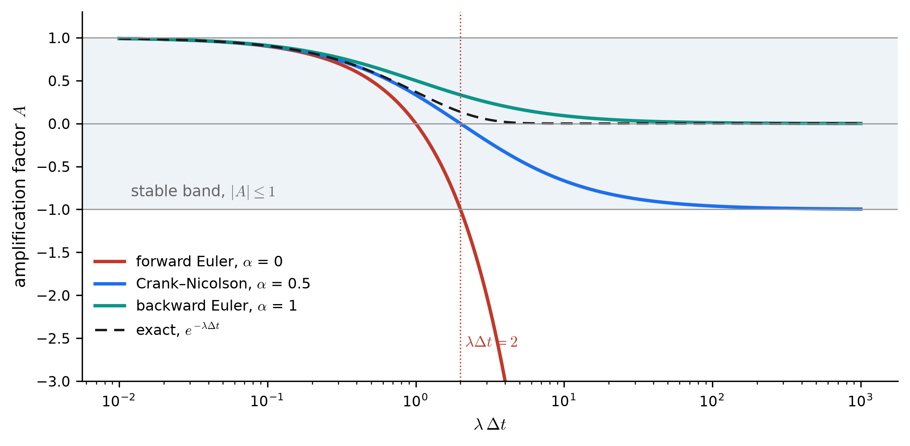
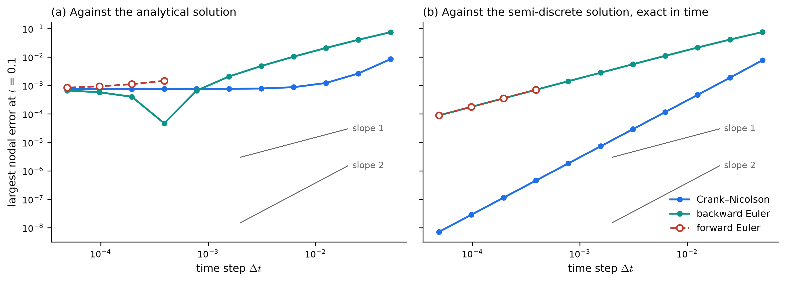
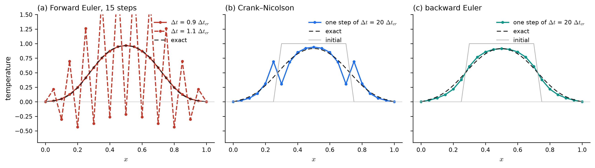
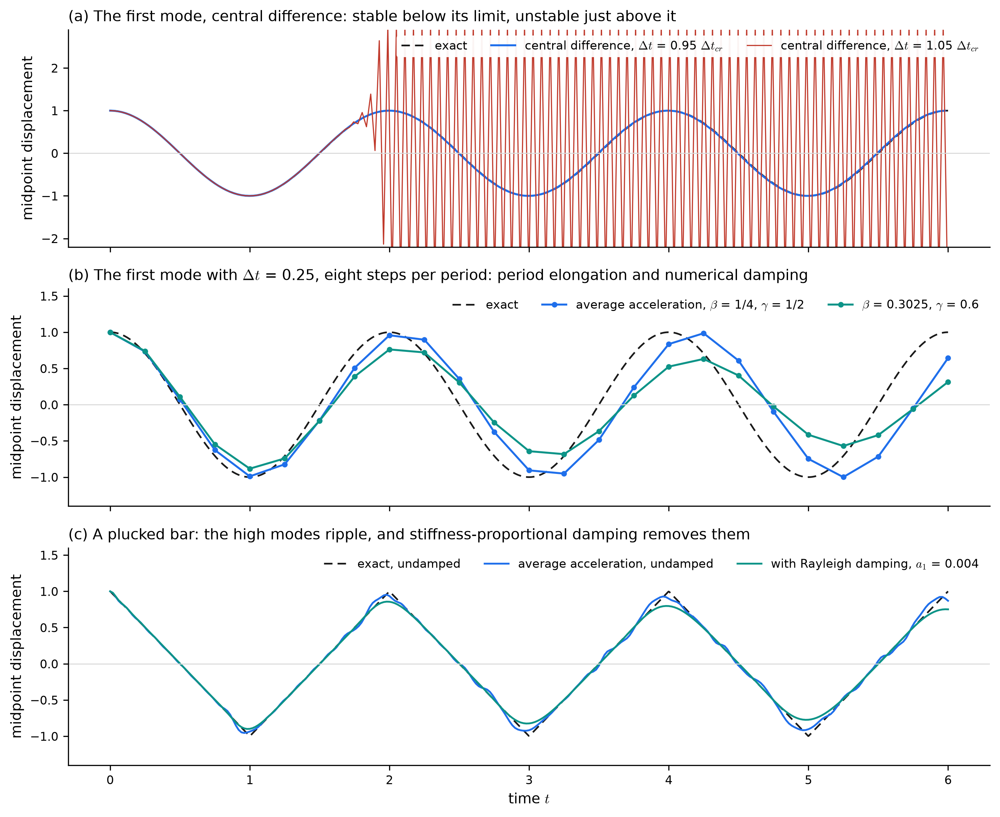
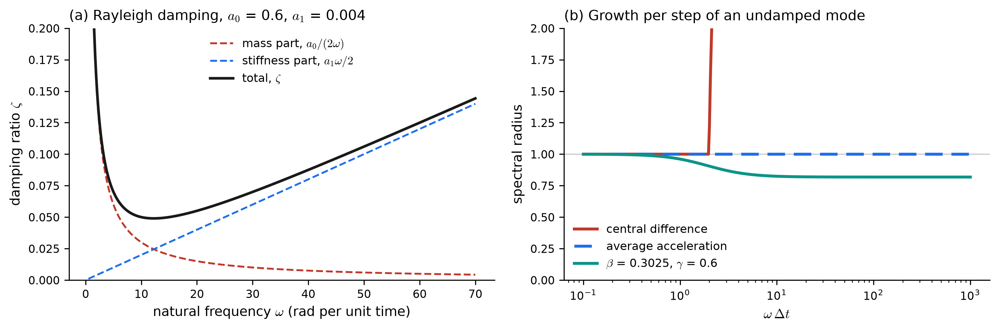

34 Class 34: Time Stepping for the Heat Equation
Forward Euler, Crank–Nicolson, and backward Euler for the semi-discrete heat equation, their stability and accuracy, and a brief look at elastodynamics
In Class 33, the heat equation was discretized in space only. The result, the semi-discrete equations,
\[ \underline{\underline{M}}\,\dot{\underline{d}} + \underline{\underline{K}}\,\underline{d} = \underline{F}, \qquad \underline{d}(0) = \underline{d}_0 , \]
is a system of ordinary differential equations in time, one for each unknown nodal temperature. The stiffness matrix \(\underline{\underline{K}}\) and the force vector \(\underline{F}\) are those of Classes 19 to 25, and the mass matrix \(\underline{\underline{M}}\), also called the capacity matrix, is assembled from the element matrices \(m^e_{ab} = \int_{\Omega^e} \rho\,c\,N_a\,N_b\,d\Omega\), where \(\rho\) is the density and \(c\) the specific heat. This class integrates the semi-discrete equations step by step in time, as in Hughes Chapter 8, and examines when the result is stable and how accurate it is. It ends with a brief look at the corresponding methods for elastodynamics, where the time derivative is of second order.
34.1 A family of methods
Divide time into steps of length \(\Delta t\), with \(t_n = n\,\Delta t\), and let \(\underline{d}_n\) approximate \(\underline{d}(t_n)\). The time derivative that multiplies \(\underline{\underline{M}}\) is replaced by a difference quotient, and the other terms are evaluated at a weighted average of the two ends of the step:
\[ \underline{\underline{M}}\,\frac{\underline{d}_{n+1} - \underline{d}_n}{\Delta t} + \underline{\underline{K}}\left((1 - \alpha)\,\underline{d}_n + \alpha\,\underline{d}_{n+1}\right) = (1 - \alpha)\,\underline{F}_n + \alpha\,\underline{F}_{n+1} , \]
where \(0 \leq \alpha \leq 1\). Collecting the unknown \(\underline{d}_{n+1}\) on the left gives the equation solved at each step,
\[ \left(\underline{\underline{M}} + \alpha\,\Delta t\,\underline{\underline{K}}\right)\underline{d}_{n+1} = \left(\underline{\underline{M}} - (1 - \alpha)\,\Delta t\,\underline{\underline{K}}\right)\underline{d}_n + \Delta t\left((1 - \alpha)\,\underline{F}_n + \alpha\,\underline{F}_{n+1}\right) . \]
Hughes calls this the generalized trapezoidal method. Three choices of \(\alpha\) have their own names.
| \(\alpha\) | Method | The rest of the equation is evaluated | Type |
|---|---|---|---|
| 0 | forward Euler | at the start of the step | explicit |
| \(\tfrac{1}{2}\) | Crank–Nicolson, or the trapezoidal rule | at the average of the two ends, so the difference quotient is a central difference about \(t_{n+1/2}\) | implicit |
| 1 | backward Euler | at the end of the step | implicit |
With \(\alpha = 0\), the matrix on the left is \(\underline{\underline{M}}\) alone, and the method is called explicit. If \(\underline{\underline{M}}\) is replaced by a diagonal, or lumped, mass matrix, whose diagonal holds the sums of the rows of the consistent one, each step costs only a few operations per node, with no system of equations to solve. For \(\alpha > 0\), the method is implicit: each step requires solving a system with the matrix \(\underline{\underline{M}} + \alpha\,\Delta t\,\underline{\underline{K}}\). When \(\Delta t\) is constant, that matrix is factored once, and each step costs a forward and a backward substitution.
Hughes writes the same method with a second vector, \(\underline{v}_n\), which approximates \(\dot{\underline{d}}(t_n)\), the rate of change of the nodal temperatures:
\[ \underline{\underline{M}}\,\underline{v}_{n+1} + \underline{\underline{K}}\,\underline{d}_{n+1} = \underline{F}_{n+1} , \qquad \underline{d}_{n+1} = \underline{d}_n + \Delta t\left((1 - \alpha)\,\underline{v}_n + \alpha\,\underline{v}_{n+1}\right) , \]
with \(\underline{v}_0\) found from \(\underline{\underline{M}}\,\underline{v}_0 = \underline{F}_0 - \underline{\underline{K}}\,\underline{d}_0\). The first equation then holds at every step, so \(\underline{\underline{M}}\,\underline{v}_n = \underline{F}_n - \underline{\underline{K}}\,\underline{d}_n\) for every \(n\). Multiplying the second equation by \(\underline{\underline{M}}\) and replacing \(\underline{\underline{M}}\,\underline{v}_n\) and \(\underline{\underline{M}}\,\underline{v}_{n+1}\) in this way eliminates the velocity and gives the equation solved at each step above. The two forms therefore give the same temperatures. The form above is a single operation on the nodal temperatures: \(\underline{d}_{n+1}\) is computed from \(\underline{d}_n\) and the forces, and nothing else is carried from one step to the next.
34.2 Stability
34.2.1 One mode at a time
The behavior of these methods is clearest one mode at a time. The generalized eigenvalue problem
\[ \underline{\underline{K}}\,\underline{\psi}_k = \lambda_k\,\underline{\underline{M}}\,\underline{\psi}_k , \qquad 0 < \lambda_1 \leq \lambda_2 \leq \cdots \leq \lambda^h_{n_{eq}} , \]
has \(n_{eq}\) eigenvalues, one for each equation, and its eigenvectors are orthogonal with respect to both \(\underline{\underline{M}}\) and \(\underline{\underline{K}}\). Writing \(\underline{d} = \sum_k y_k\,\underline{\psi}_k\), with \(\underline{F} = \underline{0}\), separates the semi-discrete equations into one equation for each mode,
\[ \dot{y}_k + \lambda_k\,y_k = 0, \qquad y_k(t) = y_k(0)\,e^{-\lambda_k t} . \]
Each mode decays at its own rate. The low modes vary smoothly over the body and decay slowly, and the high modes vary from node to node and decay quickly.
Applying the method to one mode gives \(y_{n+1} = A\,y_n\), where the amplification factor is
\[ A(\lambda\,\Delta t) = \frac{1 - (1 - \alpha)\,\lambda\,\Delta t}{1 + \alpha\,\lambda\,\Delta t} , \]
compared with the exact factor \(e^{-\lambda\,\Delta t}\) over one step (Figure 34.1). After \(n\) steps, the mode has been multiplied by \(A^n\), so the method is stable when \(|A| \leq 1\) for every mode. Since \(\lambda\,\Delta t > 0\), \(A\) is always less than 1, and \(A \geq -1\) requires \((1 - 2\alpha)\,\lambda\,\Delta t \leq 2\). This gives the stability conditions:
\[ \boxed{\; \alpha \geq \tfrac{1}{2}: \ \text{stable for every } \Delta t ; \qquad \alpha < \tfrac{1}{2}: \ \text{stable when } \lambda^h_{n_{eq}}\,\Delta t < \frac{2}{1 - 2\alpha} . \;} \]
Crank–Nicolson and backward Euler are unconditionally stable. Forward Euler is conditionally stable: it requires \(\Delta t < \Delta t_{cr} = 2/\lambda^h_{n_{eq}}\), set by the largest eigenvalue.

34.2.2 The size of the largest eigenvalue
For a uniform mesh of linear elements in one dimension, with the diffusivity \(D = \kappa/(\rho\,c)\), the largest eigenvalue is about \(12D/h^2\) with the consistent mass matrix and \(4D/h^2\) with the lumped one. For bilinear elements in two dimensions, it is about twice as large. The critical step of forward Euler is therefore about \(h^2/(6D)\) with the consistent mass and \(h^2/(2D)\) with the lumped mass, so halving the element size divides the allowed time step by four. For the meshes used below, with \(D = 1\) on the unit interval or the unit square, \(\Delta t_{cr}\) is 4.24 × 10⁻⁴ for 20 linear elements and 3.35 × 10⁻⁴ for 16 × 16 bilinear elements. For diffusion problems on fine meshes, this restriction usually makes implicit methods cheaper overall, even though each of their steps costs more.
An unstable method does not fail immediately. The modes that grow are the highest ones, and a smooth initial temperature contains them only at the level of roundoff error. They grow by a factor \(|A|\) at every step, and the solution can look reasonable for many steps before they take over.
34.2.3 Oscillation
\(A\) is negative when \(\lambda\,\Delta t > 1/(1 - \alpha)\), and a mode with a negative \(A\) changes sign at every step. For Crank–Nicolson, this happens when \(\lambda\,\Delta t > 2\), and as \(\lambda\,\Delta t\) grows, \(A\) approaches \(-1\), so the high modes alternate in sign and decay only slowly. With a large time step and a temperature that has sharp features, Crank–Nicolson therefore oscillates from node to node near those features, although it remains stable. Backward Euler has \(0 < A < 1\) for every \(\lambda\,\Delta t\), so it never oscillates, and it damps the high modes strongly; with a large step, it damps the low modes too much, and the temperature lags behind the exact one.
34.3 Accuracy
For small \(\lambda\,\Delta t\), the amplification factor matches \(e^{-\lambda\,\Delta t}\) through the first power of \(\lambda\,\Delta t\) for every \(\alpha\), and through the second power only for \(\alpha = \tfrac{1}{2}\). The error in time is therefore of first order in \(\Delta t\) for forward and backward Euler, and of second order for Crank–Nicolson. Figure 34.2 shows this for a smooth initial temperature, \(\sin(\pi x)\), on 20 elements. Measured against the exact solution of the semi-discrete equations, which has no error in time (b), the rates are 2.00 for Crank–Nicolson and 0.99 for backward Euler, and forward Euler, where it is stable, has nearly the same error as backward Euler. Measured against the analytical solution of the heat equation (a), each curve levels off at the spatial error of the mesh, about \(10^{-3}\), which no time step can remove. The total error is the sum of the error in space and the error in time, and the two must be reduced together.

Figure 34.3 shows the three behaviors for an initial temperature with sharp edges: a block at 1 in the middle of the interval, at 0 elsewhere. Forward Euler just below its limit (a) follows the exact solution, and just above it, a zigzag from node to node grows at every step. One large step of Crank–Nicolson (b) overshoots and undershoots at the edges of the block. One large step of backward Euler (c) is smooth, but the block has not cooled as much as it should.

34.4 Time stepping, interactively
The widget below integrates the heat equation with \(D = 1\) on the unit interval with 20 linear elements, or on the unit square with 16 × 16 bilinear elements, with the temperature held at 0 on the boundary and the consistent mass matrix. It runs forward Euler, Crank–Nicolson, and backward Euler side by side with the same time step, and compares each with the analytical solution of the heat equation.
- Choose one or two dimensions and the initial temperature: a smooth hump, \(\sin(\pi x)\) or \(\sin(\pi x)\sin(\pi y)\), which is a single mode, or a hot block, which contains every mode.
- The slider sets the time step as a multiple of forward Euler’s critical step \(\Delta t_{cr} = 2/\lambda^h_{n_{eq}}\).
- Press play to watch the solutions advance to \(t = 0.1\) in real time, in about six seconds, or drag the time slider. Each method shows its most recent step, so a large time step appears as a jump.
- The lower panel shows the largest nodal error of each method against time, on a logarithmic scale.
34.4.1 Things to try
- In one dimension with the hot block, set the time step to \(0.9\,\Delta t_{cr}\) and press play, then try \(1.01\,\Delta t_{cr}\) and \(1.1\,\Delta t_{cr}\). Below the limit, all three methods follow the analytical solution. Just above it, forward Euler develops a zigzag from node to node that grows at every step, while the other two are unaffected.
- Choose the smooth hump at \(1.1\,\Delta t_{cr}\). Forward Euler looks correct for most of the run and then grows suddenly near the end, because its unstable modes start from roundoff error. With a very large step and the smooth hump, it takes too few steps for that growth to show, but with the hot block it fails at every step size above the limit.
- With the hot block, set the time step to \(20\,\Delta t_{cr}\) or \(40\,\Delta t_{cr}\). Crank–Nicolson stays bounded, but it oscillates at the edges of the block and its error is the largest of the three, while backward Euler stays smooth and cools too slowly.
- With the smooth hump, compare the final errors at \(80\,\Delta t_{cr}\) and \(160\,\Delta t_{cr}\). Crank–Nicolson’s error is several times smaller than backward Euler’s, and halving the step divides it by about 3, against about 2 for backward Euler. At small steps, both level off at the spatial error, near \(10^{-3}\).
- Repeat in two dimensions. The behavior is the same, but forward Euler’s limit is smaller, because the largest eigenvalue of a two-dimensional mesh is about twice that of a one-dimensional mesh with the same element size.
34.5 Elastodynamics
For elasticity with inertia, the semi-discrete equations of Hughes Chapter 7 contain the second time derivative,
\[ \underline{\underline{M}}\,\ddot{\underline{d}} + \underline{\underline{C}}\,\dot{\underline{d}} + \underline{\underline{K}}\,\underline{d} = \underline{F} , \]
where \(\underline{\underline{M}}\) is now assembled from \(\int_{\Omega^e} \rho\,N_a\,N_b\,d\Omega\) and \(\underline{\underline{C}}\) is a damping matrix. Without damping, each mode oscillates at its natural frequency \(\omega_k = \sqrt{\lambda_k}\) instead of decaying, so the high modes ring indefinitely rather than dying out.
34.5.1 The Newmark family
The most widely used methods belong to the Newmark family (Hughes Chapter 9), which advances the displacement \(\underline{d}_n\), the velocity \(\underline{v}_n\), and the acceleration \(\underline{a}_n\) by
\[ \begin{aligned} \underline{d}_{n+1} &= \underline{d}_n + \Delta t\,\underline{v}_n + \tfrac{1}{2}\Delta t^2\left((1 - 2\beta)\,\underline{a}_n + 2\beta\,\underline{a}_{n+1}\right), \\ \underline{v}_{n+1} &= \underline{v}_n + \Delta t\left((1 - \gamma)\,\underline{a}_n + \gamma\,\underline{a}_{n+1}\right), \\ \underline{\underline{M}}\,\underline{a}_{n+1} &+ \underline{\underline{C}}\,\underline{v}_{n+1} + \underline{\underline{K}}\,\underline{d}_{n+1} = \underline{F}_{n+1} , \end{aligned} \]
with two parameters, \(\beta\) and \(\gamma\), in the same spirit as \(\alpha\) above.
| Method | \(\beta\) | \(\gamma\) | Stability | Accuracy and behavior |
|---|---|---|---|---|
| Central difference | 0 | \(\tfrac{1}{2}\) | \(\omega_{max}\,\Delta t \leq 2\) | explicit with a lumped mass matrix; second order |
| Average acceleration (trapezoidal rule) | \(\tfrac{1}{4}\) | \(\tfrac{1}{2}\) | every \(\Delta t\) | second order; no loss of amplitude, but the period lengthens |
| With numerical damping | \(\tfrac{1}{4}\left(\gamma + \tfrac{1}{2}\right)^2\) | greater than \(\tfrac{1}{2}\) | every \(\Delta t\) | damps the high frequencies; first order |
The central difference method of dynamics is a different method from Crank–Nicolson, although both use central differences. In general, the Newmark method is unconditionally stable when \(2\beta \geq \gamma \geq \tfrac{1}{2}\), and stable for \(\omega_{max}\,\Delta t \leq 1/\sqrt{\gamma/2 - \beta}\) when \(\gamma \geq \tfrac{1}{2}\) and \(\beta < \gamma/2\). The largest frequency grows in proportion to \(1/h\), not \(1/h^2\) as the largest eigenvalue of the heat equation does, and with a lumped mass matrix the limit is about the time a wave takes to cross one element. That is why explicit methods are common in wave propagation, impact, and crash analyses, while diffusion problems usually favor implicit ones. Methods such as the HHT-\(\alpha\) and generalized-\(\alpha\) methods add numerical damping while keeping second-order accuracy.
Figure 34.4 shows these behaviors for a bar fixed at both ends, with a wave speed of 1 and 20 linear elements, for which \(\Delta t_{cr} = 2/\omega_{max}\) is 0.0291. Central difference follows the first mode just below its limit and blows up just above it (a). With only eight steps per period (b), average acceleration keeps the amplitude but falls behind in phase, and the version with numerical damping also loses amplitude.
34.5.2 The Newmark method in terms of the displacement
The Newmark equations carry three vectors from one step to the next. As for the heat equation, the velocity and the acceleration can be eliminated, which leaves a single equation for the displacement. Subtracting the displacement update from \(t_{n-1}\) to \(t_n\) from the one from \(t_n\) to \(t_{n+1}\), and using the velocity update to replace \(\underline{v}_n - \underline{v}_{n-1}\), gives
\[ \underline{d}_{n+1} - 2\,\underline{d}_n + \underline{d}_{n-1} = \Delta t^2\left(\beta\,\underline{a}_{n+1} + \left(\tfrac{1}{2} - 2\beta + \gamma\right)\underline{a}_n + \left(\tfrac{1}{2} + \beta - \gamma\right)\underline{a}_{n-1}\right) . \]
The same weights applied to the velocities give, after a similar use of the two updates,
\[ \Delta t^2\left(\beta\,\underline{v}_{n+1} + \left(\tfrac{1}{2} - 2\beta + \gamma\right)\underline{v}_n + \left(\tfrac{1}{2} + \beta - \gamma\right)\underline{v}_{n-1}\right) = \Delta t\left(\gamma\,\underline{d}_{n+1} + (1 - 2\gamma)\,\underline{d}_n - (1 - \gamma)\,\underline{d}_{n-1}\right) . \]
The equation of motion holds at \(t_{n+1}\), \(t_n\), and \(t_{n-1}\). Adding these three equations with the weights \(\beta\), \(\tfrac{1}{2} - 2\beta + \gamma\), and \(\tfrac{1}{2} + \beta - \gamma\), multiplying by \(\Delta t^2\), and replacing the weighted accelerations and velocities with the two expressions above gives
\[ \begin{aligned} &\underline{\underline{M}}\left(\underline{d}_{n+1} - 2\,\underline{d}_n + \underline{d}_{n-1}\right) + \Delta t\,\underline{\underline{C}}\left(\gamma\,\underline{d}_{n+1} + (1 - 2\gamma)\,\underline{d}_n - (1 - \gamma)\,\underline{d}_{n-1}\right) \\ &\qquad + \Delta t^2\,\underline{\underline{K}}\left(\beta\,\underline{d}_{n+1} + \left(\tfrac{1}{2} - 2\beta + \gamma\right)\underline{d}_n + \left(\tfrac{1}{2} + \beta - \gamma\right)\underline{d}_{n-1}\right) \\ &\qquad\qquad = \Delta t^2\left(\beta\,\underline{F}_{n+1} + \left(\tfrac{1}{2} - 2\beta + \gamma\right)\underline{F}_n + \left(\tfrac{1}{2} + \beta - \gamma\right)\underline{F}_{n-1}\right) . \end{aligned} \]
The three weights add to 1, so the stiffness and force terms are evaluated at a weighted average of three times, as they were at a weighted average of two times for the heat equation. Collecting the unknown \(\underline{d}_{n+1}\) on the left gives the equation solved at each step,
\[ \begin{aligned} \left(\underline{\underline{M}} + \gamma\,\Delta t\,\underline{\underline{C}} + \beta\,\Delta t^2\,\underline{\underline{K}}\right)\underline{d}_{n+1} ={}& \left(2\,\underline{\underline{M}} - (1 - 2\gamma)\,\Delta t\,\underline{\underline{C}} - \left(\tfrac{1}{2} - 2\beta + \gamma\right)\Delta t^2\,\underline{\underline{K}}\right)\underline{d}_n \\ &- \left(\underline{\underline{M}} - (1 - \gamma)\,\Delta t\,\underline{\underline{C}} + \left(\tfrac{1}{2} + \beta - \gamma\right)\Delta t^2\,\underline{\underline{K}}\right)\underline{d}_{n-1} \\ &+ \Delta t^2\left(\beta\,\underline{F}_{n+1} + \left(\tfrac{1}{2} - 2\beta + \gamma\right)\underline{F}_n + \left(\tfrac{1}{2} + \beta - \gamma\right)\underline{F}_{n-1}\right) . \end{aligned} \]
The matrix on the left is the one that appears when the three Newmark equations are solved for \(\underline{a}_{n+1}\), so this form costs the same per step. Unlike the heat equation, each step uses the displacements at two previous times. This follows from the second time derivative: the semi-discrete equations need both an initial displacement and an initial velocity, and an equation in the displacement alone holds that information in two consecutive displacements. The recurrence therefore starts from \(\underline{d}_0\) and \(\underline{d}_1\), where \(\underline{d}_1\) is found by one step of the Newmark equations, with \(\underline{a}_0\) from \(\underline{\underline{M}}\,\underline{a}_0 = \underline{F}_0 - \underline{\underline{C}}\,\underline{v}_0 - \underline{\underline{K}}\,\underline{d}_0\). From then on, it gives the same displacements as the Newmark equations.
For central difference, \(\beta = 0\) and \(\gamma = \tfrac{1}{2}\), and after division by \(\Delta t^2\) the equation becomes
\[ \underline{\underline{M}}\,\frac{\underline{d}_{n+1} - 2\,\underline{d}_n + \underline{d}_{n-1}}{\Delta t^2} + \underline{\underline{C}}\,\frac{\underline{d}_{n+1} - \underline{d}_{n-1}}{2\,\Delta t} + \underline{\underline{K}}\,\underline{d}_n = \underline{F}_n , \]
in which both time derivatives are replaced by central differences about \(t_n\), which explains the name. The stiffness enters only through \(\underline{d}_n\), so with a lumped mass matrix and no damping, or damping proportional to the mass, the matrix on the left is diagonal and no system of equations needs to be solved. For average acceleration, \(\beta = \tfrac{1}{4}\) and \(\gamma = \tfrac{1}{2}\), and the stiffness and force terms become \(\underline{\underline{K}}\left(\underline{d}_{n+1} + 2\,\underline{d}_n + \underline{d}_{n-1}\right)/4\) and \(\left(\underline{F}_{n+1} + 2\,\underline{F}_n + \underline{F}_{n-1}\right)/4\), with the same difference quotients for the mass and damping terms.
For one undamped mode with no force, the equation becomes, with \(\Omega = \omega\,\Delta t\),
\[ \left(1 + \beta\,\Omega^2\right) y_{n+1} - \left(2 - \left(\tfrac{1}{2} - 2\beta + \gamma\right)\Omega^2\right) y_n + \left(1 + \left(\tfrac{1}{2} + \beta - \gamma\right)\Omega^2\right) y_{n-1} = 0 . \]
Its solutions have the form \(y_n = z^n\), where \(z\) is one of the two roots of the quadratic obtained by replacing \(y_{n+1}\), \(y_n\), and \(y_{n-1}\) with \(z^2\), \(z\), and 1. The two roots play the role of the amplification factor \(A\) of the heat equation, and the spectral radius in panel (b) of Figure 34.5 is the larger of their magnitudes. The product of the roots is \(\left(1 + \left(\tfrac{1}{2} + \beta - \gamma\right)\Omega^2\right)/\left(1 + \beta\,\Omega^2\right)\). When \(\gamma = \tfrac{1}{2}\), the product is 1, so complex roots both have magnitude 1, and the mode keeps its amplitude. For central difference, the roots become real beyond \(\Omega = 2\), and one of them is then larger than 1 in magnitude. When \(\gamma > \tfrac{1}{2}\), the product is less than 1, so complex roots have magnitude less than 1, and the mode loses amplitude at every step, which is the numerical damping in Table 34.2.
34.5.3 Damping
The high modes of a mesh are poorly resolved, and in an undamped analysis they ring indefinitely, adding noise to the response (Figure 34.4 c). Two kinds of damping are used to remove them. Numerical damping, from \(\gamma > \tfrac{1}{2}\) or the methods mentioned above, comes from the time integrator. Rayleigh damping is physical damping of a convenient form,
\[ \underline{\underline{C}} = a_0\,\underline{\underline{M}} + a_1\,\underline{\underline{K}} , \]
which keeps the modes separate and gives mode \(k\) the damping ratio
\[ \zeta_k = \frac{a_0}{2\,\omega_k} + \frac{a_1\,\omega_k}{2} . \]
The mass-proportional part damps the low frequencies and the stiffness-proportional part the high ones (Figure 34.5 a), and \(a_0\) and \(a_1\) are usually chosen to give a target damping ratio, such as 2% to 5% for a structure, at two frequencies of interest.


34.6 Summary
- The semi-discrete heat equation \(\underline{\underline{M}}\,\dot{\underline{d}} + \underline{\underline{K}}\,\underline{d} = \underline{F}\) is integrated in time by replacing \(\dot{\underline{d}}\) with a difference quotient and evaluating the rest at a weighted average of the two ends of the step: forward Euler (\(\alpha = 0\)), Crank–Nicolson (\(\alpha = \tfrac{1}{2}\)), and backward Euler (\(\alpha = 1\)). Each step is a single solve for \(\underline{d}_{n+1}\) from \(\underline{d}_n\), and Hughes’ form with the velocity \(\underline{v}_n\) reduces to it.
- One mode at a time, each step multiplies the mode by \(A = \left(1 - (1 - \alpha)\lambda\Delta t\right)/\left(1 + \alpha\lambda\Delta t\right)\). The method is stable for every \(\Delta t\) when \(\alpha \geq \tfrac{1}{2}\), and when \(\lambda^h_{n_{eq}}\,\Delta t < 2/(1 - 2\alpha)\) when \(\alpha < \tfrac{1}{2}\).
- Forward Euler’s limit is proportional to \(h^2\). Crank–Nicolson is second-order accurate but oscillates with large steps near sharp features; backward Euler is first order, never oscillates, and lags with large steps.
- The total error is the error in space plus the error in time, and refining only one of them eventually stops helping.
- Elastodynamics has a second time derivative and is integrated by the Newmark family: central difference is explicit and conditionally stable, average acceleration is unconditionally stable without numerical damping, and Rayleigh or numerical damping removes the ringing of poorly resolved high modes. Eliminating the velocity and the acceleration leaves a single equation for \(\underline{d}_{n+1}\) in terms of \(\underline{d}_n\) and \(\underline{d}_{n-1}\).